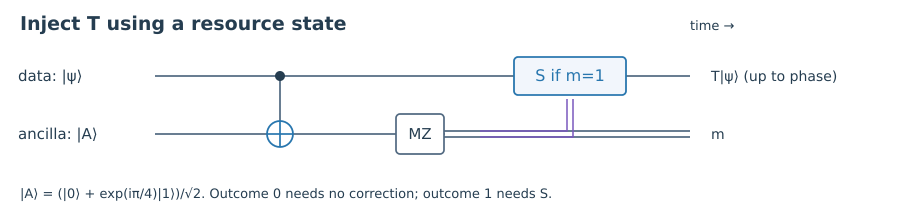

1. Quick check §
Define a Clifford unitary.
Hint 1
State its action on Paulis.
Worked solution
It maps every Pauli operator to another Pauli, including an allowed phase, under conjugation.
Chapter 09 · Draft lesson
How can we obtain a universal gate set when the easiest protected gates are restricted?
Starting point: Chapters 1–8; Clifford gates, logical operators, and measurements.
Anchor example: Injecting a T gate using an ancilla (|0⟩+e^(iπ/4)|1⟩)/√2.
Method: Derive each measurement branch and account for the resource state consumed.
Watch for: A state-injection identity assumes a sufficiently accurate resource; it is not itself a fault-tolerance proof.
This lesson includes explanations, worked examples, and problems with solutions. Advanced results whose proofs are outside the chapter are identified explicitly.
We can now move encoded states and apply some useful logical gates without uncontrolled error spread. Is that enough to run any quantum algorithm? The answer depends on which gates we can implement. This chapter follows the gap from protected Clifford operations to a non-Clifford resource, showing exactly where an extra ingredient enters.
A Clifford unitary maps the Pauli group to itself by conjugation. Hadamard H, phase S=diag(1,i), and CNOT generate the usual Clifford operations. Their algebra is especially compatible with stabilizer codes and Pauli-frame tracking. But a unitary Clifford group on a fixed number of qubits is discrete up to global phase; it does not supply arbitrary rotations. Stabilizer preparations, Clifford gates, and Pauli measurements alone are not a universal quantum computing resource.
Add the gate T=diag(1,e^(iπ/4)). It is non-Clifford because TXT†=(X+Y)/√2, which is not a Pauli. Clifford gates together with T form an approximately universal gate set: sequences can approximate arbitrary unitaries to a specified accuracy. Approximation accuracy and the resulting T count will become part of a resource estimate.
Why not simply find a code with a transversal implementation of every needed gate? The Eastin–Knill theorem rules out a universal transversal encoded gate set for a fixed finite-dimensional code that detects arbitrary errors on each individual physical subsystem. We state the theorem without its full proof. It does not rule out fault-tolerant universal computation using measurements, resource states, code changes, or other nontransversal constructions.
The practical lesson is to identify a protected set and then explicitly supply what it lacks. Different code families make different gates convenient. We will work with Clifford operations as the protected set and ask how a special ancilla can provide T.
Worked check 9.1. Why is T not Clifford even though it is diagonal?
Conjugation of X gives a superposition of two Pauli operators, (X+Y)/√2. The Clifford condition concerns the action on every Pauli, not whether the gate matrix is diagonal.
Prepare an ancilla \(|A\rangle=T|+\rangle=(|0\rangle+e^{i\pi/4}|1\rangle)/\sqrt2\). Let the data be \(|\psi\rangle=a|0\rangle+b|1\rangle\). Apply CNOT with the data as control and the ancilla as target, then measure the ancilla in Z. Set t=e^(iπ/4). Just before the measurement, the joint state is
\[\frac1{\sqrt2}\left[a|0\rangle(|0\rangle+t|1\rangle)+b|1\rangle(|1\rangle+t|0\rangle)\right].\]For outcome zero, the unnormalized data state is (a|0⟩+tb|1⟩)/√2, namely T|ψ⟩/√2. For outcome one it is (ta|0⟩+b|1⟩)/√2, or tT†|ψ⟩/√2. Each outcome has probability one half, independent of the data state.
The second branch appears to apply the wrong gate, but a Clifford correction fixes it. Apply S when the outcome is one. Since ST†=T, the result is tT|ψ⟩, differing only by an irrelevant global phase from the desired output. With the recorded outcome and conditional correction, both branches implement T. The ancilla has been consumed.
The derivation works equally well when a and b are vectors in an inaccessible reference system: it is a linear gate identity on the data, not just a check of selected scalar amplitudes. To use it fault tolerantly, the data and ancilla must be appropriately encoded and the CNOT, measurement, and conditional Clifford operation protected. A noisy |A⟩ still introduces error. Injection moves the non-Clifford difficulty into preparing a reliable resource state; it does not remove that difficulty.

Worked check 9.2. What happens if the outcome-one branch is left without its S correction?
The data undergo T† rather than T, up to global phase. On a superposition this changes the relative phase. Merely knowing that a measurement occurred does not implement the intended deterministic gate without feed-forward or equivalent tracking.
Magic-state distillation consumes several imperfect nonstabilizer states, uses protected Clifford operations and measurements, and accepts selected outputs with improved accuracy. It does not create a non-Clifford resource from stabilizer inputs alone. The input states must lie in an appropriate distillable region, and the acceptance record is part of the protocol. Bravyi and Kitaev established the resource-state route to universality with ideal Clifford operations and noisy ancillas.
For a concrete planning model, suppose a fifteen-input routine accepts with probability a and, under independent input states \((1-q)|A\rangle\langle A|+qZ|A\rangle\langle A|Z\) and ideal Clifford processing, has leading output error q′≈35q³. This is the small-error scaling of the fifteen-to-one protocol in the cited Bravyi–Kitaev paper (after matching its state convention); higher-order terms, correlations, and faulty processing must be included before using it as an engineering prediction. The cubic power expresses rejection or correction of lower-order error patterns, not immunity to every correlated triple.
At q=0.01 the leading term is 3.5×10⁻⁵. If a=0.9 in a specified operating model, the expected raw-state consumption per accepted output is 15/a≈16.67, before accounting for the cost of protected operations. A second idealized round consumes fifteen first-round outputs per attempt, so yield compounds across levels. Parallel factories change throughput and space requirements, not this accounting identity.
A universal computation must budget state error, factory faults, Clifford faults, and synthesis error together. Counting only data qubits or only T gates leaves out a major part of the machine. The final chapter will use explicit assumptions to make a small resource estimate, while keeping estimates separate from measured hardware claims.
Worked check 9.3. If a routine consumes m inputs per attempt and succeeds independently with probability a, what is its expected input cost per accepted output?
The number of attempts is geometrically distributed with mean 1/a. Multiplying by m gives m/a inputs on average. This assumes failed attempts consume their inputs and that a remains the same from attempt to attempt.
These exercises draw on the whole chapter. Attempt each question before opening a hint, explain your reasoning, then compare it with the worked solution.
Define a Clifford unitary.
State its action on Paulis.
It maps every Pauli operator to another Pauli, including an allowed phase, under conjugation.
What state supplies the non-Clifford resource for the injection example?
Apply T to |+⟩.
\(|A\rangle=(|0\rangle+e^{i\pi/4}|1\rangle)/\sqrt2\). It is consumed by the measurement-based implementation.
Verify ST†=T using diagonal entries.
Multiply the lower-right phases.
\(i e^{-i\pi/4}=e^{i\pi/4}\), while the upper-left entry remains one. Therefore ST†=T.
Compute the probability of ancilla outcome zero for normalized a,b.
Use its unnormalized branch vector.
The squared norm is (|a|²+|b|²)/2=1/2, independent of the input. The other branch has the same probability.
Evaluate the illustrative leading error 35q³ at q=0.005.
Cube q before multiplying.
It is 4.375×10⁻⁶. This is a leading-order estimate under the stated ideal-processing and independent-input assumptions.
Find expected input cost for m=15,a=0.8.
Divide inputs per attempt by acceptance.
The expected cost is 18.75 input states per accepted output, before protected-circuit and storage overhead.
For two identical-yield rounds with a=0.9, estimate raw input consumption.
Each final input requires its own accepted first-round output.
The mean is (15/0.9)²≈277.78 raw states per accepted second-round output, assuming independent attempts and no resource reuse.
Does Eastin–Knill forbid all universal fault-tolerant computation?
Keep the theorem’s transversal restriction.
No. Its restriction is on a universal transversal gate set for a fixed code under its assumptions. Measurements, magic states, and other constructions provide alternatives.
Does the ideal injection circuit prove a noisy implementation is fault tolerant?
Identify which resource was assumed perfect.
No. It establishes a gate identity with the specified ancilla. Ancilla quality and faults in encoded operations require a separate error analysis.
How could correlated input errors invalidate a cubic distillation estimate?
Compare a triple event probability with q³.
If a mechanism creates a harmful correlated triple with probability of order q, its contribution is not of order q³. Marginal input error rates alone do not establish the independence assumption behind the leading formula.